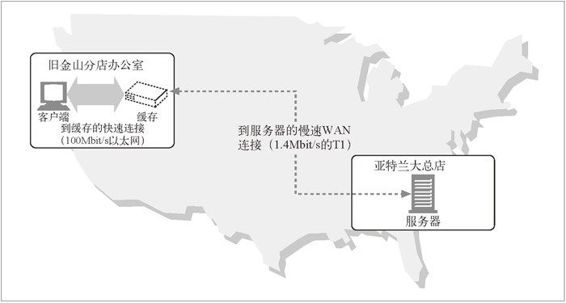

7.2 带宽瓶颈
缓存还可以缓解网络的瓶颈问题。很多网络为本地网络客户端提供的带宽比为远程服务器提供的带宽要宽（参见图 7-1）。客户端会以路径上最慢的网速访问服务器。如果客户端从一个快速局域网的缓存中得到了一份副本，那么缓存就可以提高性能——尤其是要传输比较大的文件时。

图 7-1 缓存可以改善由有限广域带宽造成的网络瓶颈
在图 7-1 中，Joe 的五金商店旧金山分店的用户通过 1.4Mbit/s 的 T1 因特网连接，从亚特兰大总店下载一个 5MB 的库存文件要花 30 秒的时间。如果在旧金山分店里缓存了这个文档，本地用户通过以太网连接只要花费不到 1 秒的时间就可以获得同一份文档了。
表 7-1 说明了在几种不同的网速下，传输几种不同大小的文档时，带宽会对传输速度产生什么样的影响。带宽会给较大的文档带来显而易见的时延，不同类型网络的速度差异会非常明显。1 一个 54kbit/s 的 Modem 传输一个 5MB 的文件需要 749 秒（超过 12 分钟），而在快速以太网 LAN 中，只要不到一秒的时间。
1 这张表只列出了网络带宽对传输时间的影响。它假定网络效率为 100%，而且不存在网络或应用程序的处理时延。通过这种方式给出的时延是下限值。实际的时延要大一些，而小型对象的时延则主要是由非带宽开销造成的。
表7-1 带宽造成的传输时延，理想化情况（以秒为时间单位）
| 大型HTML （15KB） | JPEG （40KB） | 大型JPEG （150KB） | 大型文件 （5MB） | |
|---|---|---|---|---|
| 拨号modem（56kbit/s） | 2.19 | 5.85 | 21.94 | 748.98 |
| DSL（256Kbit/s） | 0.48 | 1.28 | 4.80 | 163.84 |
| T1（1.4Mbit/s） | 0.09 | 0.23 | 0.85 | 29.13 |
| 慢速以太网（10Mbit/s） | 0.01 | 0.03 | 0.12 | 4.19 |
| DS3（45Mbit/s） | 0.00 | 0.01 | 0.03 | 0.93 |
| 快速以太网（100Mbit/s） | 0.00 | 0.00 | 0.01 | 0.42 |